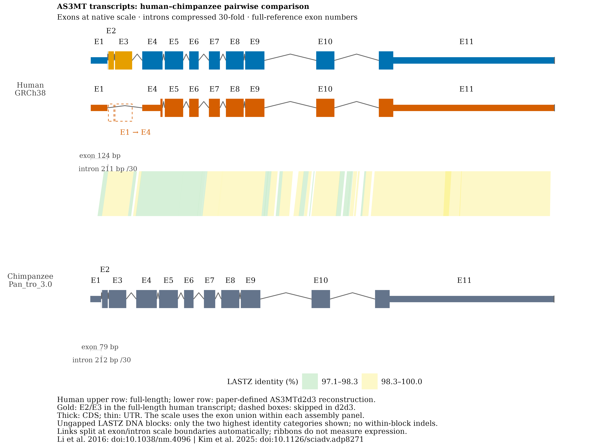
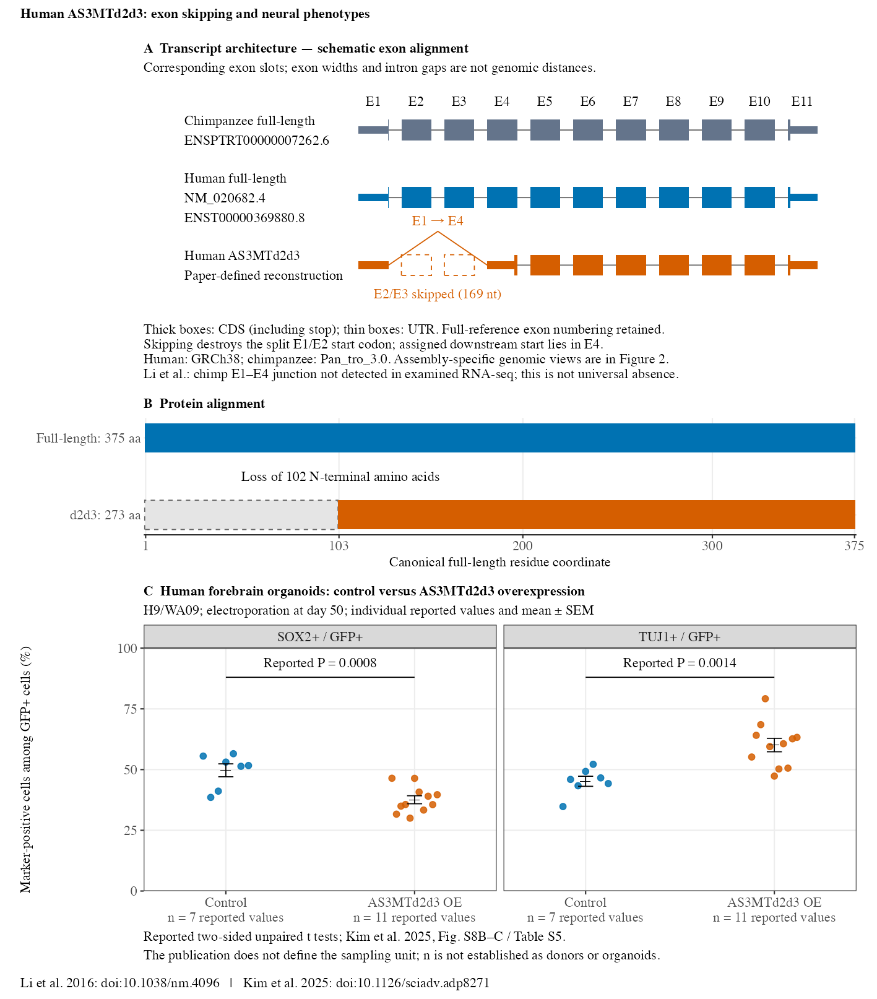

Human AS3MTd2d3: Exon Skipping and Neural Phenotypes
Source:vignettes/as3mt-splice-variants-demo.Rmd
as3mt-splice-variants-demo.RmdWhat this example compares
This example compares the selected human full-length AS3MT transcript, a paper-defined AS3MTd2d3 reconstruction, and the selected chimpanzee full-length reference. Full-reference exon numbers are retained: the short human model contains E1 and E4–E11. Its transcript ends are reconstructed from the current canonical reference; no stable accession for that exact reconstruction was independently established.
Human coordinates are from GRCh38, and chimpanzee coordinates from Pan_tro_3.0, using the supplied Ensembl release-116 annotation snapshot. The models retain their own assembly coordinates. They are neither measured expression tracks nor a matched human–chimpanzee phenotype experiment.
Load one offline comparison
The bundled loader constructs a SynSpecies containing
two SynIndividual objects, their CDS/UTR annotations, a
SynPairAlignment, and stored genomic windows. No network
access, LASTZ installation, or working-directory paths are needed to
render the tutorial. These helpers are example-level code, not new
exported package functions.
library(ggexon)
library(ggplot2)
demo_dir <- system.file("extdata", "as3mt", package = "ggexon")
source(file.path(demo_dir, "load-as3mt-example.R"), local = TRUE)
as3mt <- load_as3mt_example(demo_dir)
as3mt$comparison
#> An object of class "SynSpecies"
#> name: AS3MT human-chimpanzee transcript comparison
#> individuals: 2
#> pairwise_alignments: 1
#> multiple_alignments: 0
#> homology_annotations: 0
#> locus_sets: 0
#> tree: FALSE
#> tree_plot: FALSEThe selected human references are
NM_020682.4 / ENST00000369880.8 and
NP_065733.2; the selected chimpanzee transcript is
ENSPTRT00000007262.6. Original annotation snapshots,
sequence hashes, the specification and source cells are preserved under
the bundled extdata/as3mt directory.
One full-locus view with smaller introns
as3mt_plot <- plot_as3mt_example(as3mt, intron_factor = 30)
as3mt_plot$plot
AS3MT transcript comparison. Exons retain native widths and introns are compressed 30-fold. Thick boxes show CDS including stop; thin boxes show UTR. The short human row is a paper-defined reconstruction. The link layer uses raw genomic coordinates and follows both source-panel transforms automatically.
Gold E2/E3 occur in the human full-length transcript. Dashed outlines mark their skipped positions in d2d3. E1–E4 remain distinguishable without a second zoom panel. Separate exon/intron scale bars state their actual base-pair widths and the compression factor.
The core grammar used inside the helper is:
ggexon(as3mt$comparison) +
geom_exon2(
aes(xmin = xmin - 0.5, xmax = xmax + 0.5,
ymin = isoform_y, transcripts = transcript_name, fill = exon_class),
annotation_type = "all", compress_introns = FALSE,
utr_height = 0.35, cds_height = 1
) +
geom_nuclink(alignment = "human_chimp", aes(fill = identity_band),
inherit.aes = FALSE) +
facet_genomics(vars(track), scales = "free_x", ncol = 1) +
scale_x_ggexon_genomic(
intron_factor = 30,
guide = guide_x_ggexon_piecewise(by = "panel")
)The half-base box edges preserve inclusive exon lengths. Setting
compress_introns = FALSE on the geom leaves compression to
the scale, avoiding a second schematic transformation.
Links follow the mosaic exon/intron scale
geom_nuclink() automatically splits each link at the
union of scale boundaries crossed in either annotation
panel. Each resulting piece uses its target panel’s map at one end and
its query panel’s map at the other. Changing intron_factor
therefore updates both the annotations and links. Raw alignment
coordinates remain genomic; no example-specific endpoint conversion is
used. Stored genomic windows are also mapped into display limits
automatically.
Within an ungapped alignment block this preserves nucleotide correspondence. For general interval-only gapped links, subdivision retains proportional endpoint correspondence; use ungapped blocks when exact internal nucleotide correspondence is needed.
link_layer <- which(vapply(as3mt_plot$plot$layers,
function(layer) inherits(layer$geom, "GeomPanel"), logical(1)))
vertices <- as3mt_plot$build$data[[link_layer]]
data.frame(
original_blocks = length(unique(vertices$parent_group)),
native_polygon_pieces = length(unique(vertices$group))
)
#> original_blocks native_polygon_pieces
#> 1 37 57The 37 original blocks become 57 polygon pieces.
Built vertices retain genomic_x, parent_group
and link_piece for inspection.
How the alignment was generated
Reference chromosome-10 windows were downloaded from Ensembl and
assembly checked: human 102869470–102901899 and chimpanzee
104324156–104356197. The recorded LASTZ 1.04.52 command
is:
lastz human.fa chimp.fa --strand=both --nogapped --chain \
--format=paf:minimap2 --output=human_chimp.nogap.pafEvery one of the 124 raw blocks was checked for a single gap-free CIGAR, equal query/target/alignment spans, and a matching-base count agreeing with the input DNA. Filtering for length ≥80 bp and identity ≥50% retained 93 blocks. The plot keeps only the two highest identity quantile categories: 97.1–98.3% and 98.3–100.0% (rounded labels), totaling 37 blocks. Those category boundaries were calculated before this final selection and were not recalculated afterward. Reverse-strand sequence matches can occur; links are not themselves evidence for exon correspondence or exon skipping.
Transcript, protein and organoid interpretation

The overview’s exon slots are schematic, unlike the assembly-specific, piecewise genomic scale in the comparison above. Skipping E2/E3 removes 169 RNA nucleotides, destroys the original E1/E2-split start codon, and uses the handoff-assigned downstream start in E4. The assigned 273-aa protein corresponds to full-length residues 103–375, losing 102 N-terminal amino acids. This is not a 306-nt in-frame exon deletion. The reconstructed 2,281-nt RNA length is conditional on the selected ends and reference repeat allele.
The organoid data compare control with AS3MTd2d3 overexpression in H9/WA09 human forebrain organoids, electroporated at day 50. Each SOX2 or TUJ1 endpoint has 7 control and 11 overexpression reported values. Points show every supplied percentage; summaries use the arithmetic mean and sample SD divided by √n. The publication does not define the sampling unit: these counts must not be described as independent donors or organoids. The reported two-sided unpaired-t-test P values are 0.0008 for SOX2 and 0.0014 for TUJ1.
summary <- as3mt$organoid_summary
summary$group <- c("Control", "AS3MTd2d3 overexpression")[summary$group]
knitr::kable(summary, digits = 3)| marker | group | mean | sem | n |
|---|---|---|---|---|
| SOX2+ / GFP+ | Control | 49.692 | 2.659 | 7 |
| SOX2+ / GFP+ | AS3MTd2d3 overexpression | 37.578 | 1.645 | 11 |
| TUJ1+ / GFP+ | Control | 45.184 | 2.072 | 7 |
| TUJ1+ / GFP+ | AS3MTd2d3 overexpression | 60.101 | 2.768 | 11 |
Li et al. did not detect the chimp E1–E4 junction in the examined pooled-tissue RNA-seq, which included brain. This is not proof of absence in every tissue. Healthy humans also express the short isoform; the experiment does not measure species-specific disease rates.
Sources and reproducibility
- Li et al. (2016), Nature Medicine, doi:10.1038/nm.4096.
- Kim et al. (2025), Science Advances, doi:10.1126/sciadv.adp8271, Supplementary Fig. S8B–C and Table S5, cells A34:A40 and B34:B44.
The repository’s data-raw/as3mt directory contains the
alignment-preparation and figure-export scripts. The loader and all
plotting inputs are bundled in the installed package under
extdata/as3mt. The optional rat-neuron and spindle-angle
panels are not included in these figures.